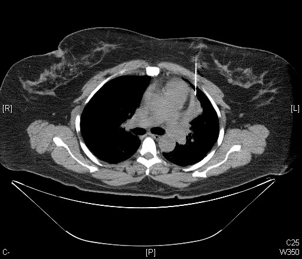

Ficha del catálogo
Timoma
- Sistema
- Respiratorio
- Modalidad
- TC
- Región
- Mediastino
- Dificultad
- Intermedio
Tumor derivado del epitelio tímico y la causa más frecuente de masa primaria del mediastino anterior en el adulto. Se asocia con frecuencia a miastenia grave y a otros síndromes autoinmunitarios. Su comportamiento va desde la lesión encapsulada de crecimiento lento hasta la invasión de estructuras vecinas y la siembra pleural.
Técnica
Tomografía de tórax con contraste intravenoso en fase venosa, con reconstrucciones multiplanares para valorar los planos grasos de separación.
Qué observar
- Masa de mediastino anterior situada por delante del corazón y de los grandes vasos
- Contorno bien definido con realce homogéneo o algo heterogéneo
- Calcificaciones puntiformes o periféricas en una parte de los casos
- Conservación o pérdida de los planos grasos con los vasos y el pericardio
- Nódulos pleurales que indican diseminación por contigüidad
- Ausencia de adenopatías voluminosas, a diferencia del linfoma
Hallazgos
Masa sólida de mediastino anterior con realce homogéneo y bordes definidos, sin adenopatías significativas asociadas.
Perlas
Lo decisivo no es el tamaño sino los signos de invasión. La pérdida de los planos grasos, el contacto extenso con los vasos y los implantes pleurales cambian la estrategia quirúrgica y el pronóstico.
Diagnóstico diferencial
- Linfoma
- Masa que engloba vasos con adenopatías en otros compartimentos y en paciente más joven.
- Hiperplasia tímica
- Aumento difuso que conserva la forma triangular de la glándula.
- Tumor de células germinales
- Contenido graso o quístico con marcadores tumorales elevados.
Simuladores
- Timo residual prominente en el adulto joven
- Grasa mediastínica asimétrica
- Quiste tímico de contenido denso
Por modalidad
- TC
- Técnica inicial que define localización, extensión e invasión
- RM
- Ayuda a separar el timoma de la hiperplasia y del quiste
- RX
- Ensanchamiento mediastínico superior con borde bien definido
Protocolo
Adquisición volumétrica con contraste en fase venosa y reconstrucciones sagitales y coronales para valorar la relación con los vasos y el pericardio.
Clasificación
Se distingue entre timoma encapsulado y timoma invasivo según la afectación de la cápsula, la grasa mediastínica, los órganos vecinos y la pleura.
Errores frecuentes
- Confundir hiperplasia tímica con tumor en pacientes jóvenes
- No revisar la pleura en busca de implantes
- Afirmar invasión solo por contacto amplio, sin otros signos

timoma mediastino anterior miastenia implantes pleurales masa